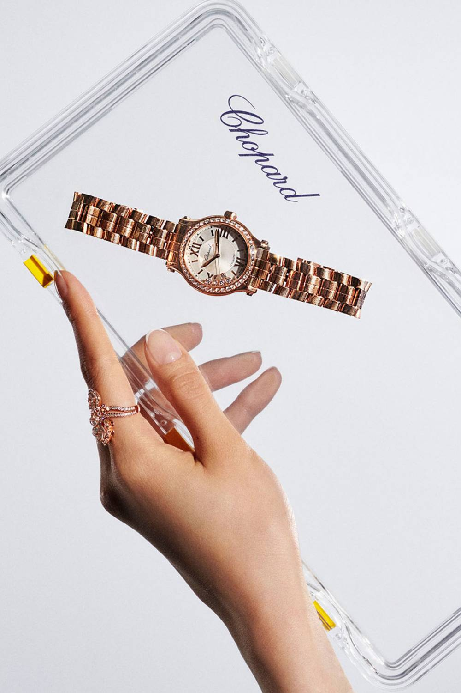

To mark the introduction of the new wave of fine jewelry designers on FARFETCH, we crafted a visual narrative that merges bold innovation with timeless craftsmanship. This campaign captures the essence of the new guard, setting the stage for the icons that will define the future of luxury.
SERVICES: CASTING, SHOOT ART DIRECTION, CREATIVE DIRECTION
PHOTOGRAPHY: thurstan redding